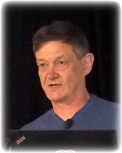

The state of memory-management development
Morton started by saying that he was finally moving part of his process to Git — a change he has resisted for many years. There will be three trees kept on kernel.org for patches currently in development. The "hot fixes" tree is just what it sounds like; it will have branches for various releases with important fixes to upstream code. The "stable" tree holds material destined for the mainline, probably in the next merge window, while the "unstable" queue holds less mature material.
All three of these trees will be routinely rolled together to make the
-mm tree and fed into
linux-next. Morton made it clear that he will still use Quilt as much as
he can for his own workflow; he finds it to be much more flexible when work is still in flux.
He did say, though, that he will be willing to do Git pulls from developers
"if I have to", but he still doesn't think that model works. There has

The unstable tree exists only as a Quilt queue for now, though it will eventually be available in Git as well. When that happens, probably in the 5.19 cycle, he does not want developers to use the result as a base for development. Instead, all patches should be against an upstream release, preferably the previous -rc3. Each series will be stored in a separate branch, even if there is only one patch involved. The result will obviously be many branches with long names; they will start with mm-unstable- and contain the patch subject. When developers send follow-on patches, he said, they should include the target branch name.
The stable tree is meant to be immutable, meaning it will never be rebased. That is a nice idea, he said, but it only works if there is material to put into it. He has been looking for this material, but nothing is ready at this point; everything is waiting for reviews and/or updates. If this process is going to work developers need to nail things down more quickly. He plans to become more active in nagging developers, often in private, to help push things forward.
Stability and review
Michal Hocko said that it seemed like a lot of patches are entering the -mm tree too soon; that causes developers' attention to move on to the next shiny thing. Morton answered that he has begun skipping the first version of a new patch series, partly for that reason. But, he added, anybody who thinks that a merge into -mm means that their work is done is showing a lack of experience. He tries to guide such folks when he can.
David Hildenbrand suggested that Morton should push for more review of patches before accepting them into -mm; a lot of patches that break things are getting through. In general, the community seems to have far more ability to generate code than to review it, he said. Morton answered that he doesn't want to block patches from -mm due to a lack of review; he would rather get the work out there and tested. He will not let work proceed to the mainline, though, without proper review.
Dan Williams suggested that perhaps more transparency would help; if developers could see the state of the queue and which patches are waiting on review, they might feel motivated to help with that. Morton answered that this information is available now. But, he said, he does make the decision to move patches into the stable tree by himself, and he would like to change that. This decision, he said, should be made more transparently and sooner. For now, his plan is to publicly post his plans and see if there are objections; he does not intend to wait for explicit acks before moving work to stable, though.
He would like to see more focus on the transition to stable, which he described as "a big deal". Patches do not need to be perfect to be promoted; after all, there are generally still a few months (the remainder of the development cycle and the next full cycle after a patch is merged) to get things up to production quality. So his criteria are whether Linux wants the patch overall, and whether it is in good enough condition to proceed.
Morton raised some doubts as to whether he should be publishing the stable tree at all. He does not want developers to base their patches on it, but that will surely be a temptation if it's out there.
There were some questions about documenting the process (and especially the criteria) for moving patches into the stable tree, but Mel Gorman advised against that. If a set of rules is posted, developers will inevitably try to game them. He also said that running the stable tree in a non-rebasing mode wasn't particularly important. Memory-management patches tend not to conflict often, so rebasing is unlikely to create problems for developers, especially early in the development cycle.
Changing subject, Morton said that he actually plans to create a fourth Git tree that will contain kernel-wide patches. It will always be generated from a Quilt queue, and he doesn't want to have any memory-management material there. Morton still handles a lot of patches to unrelated subsystems, so the reasoning behind this tree is easy to understand.
Submaintainers
Hocko brought up the question of submaintainers in the memory-management subsystem. There are a few areas that are handled by another developer's Git tree and are often pushed directly into the mainline, which he doesn't like. It ends up balkanizing the memory-management subsystem, he said, and makes it hard to get a coherent picture of where things stand. Having submaintainers may make sense, he said, but their trees should be pulled into -mm. Morton said that might work; he would probably pull those trees into the unstable branch.
Vlastimil Babka asked whether his tree, which contains changes to the slab allocators, should be going through -mm. Morton replied that the current process is working and Babka should keep sending pull requests directly to Linus Torvalds. He would not add any value to the process, he said. He pointed out, though, that slab patches tend to be independent of everything else; trying to decouple core memory-management changes, instead, would be a nightmare.
Hocko noted, though, that conflicts between areas are rare, even in the core memory-management subsystem. Perhaps it would be worthwhile to bring in more submaintainers to take on specific areas. Morton expressed a willingness to try and see if it works better than the current process, but he said he would like to get the current changes stabilized first. Hildenbrand added that new developers often don't know where to send memory-management patches, and the get_maintainer.pl script doesn't normally help. Defining submaintainers might help in this regard; he volunteered to take on that role for memory hotplug.
At this point, the day was approaching its end and the participants were
getting tired. There was a bit of residual conversation on some details,
but the session came quickly to a close.
| Index entries for this article | |
|---|---|
| Kernel | Memory management/Development process |
| Conference | Storage, Filesystem, Memory-Management and BPF Summit/2022 |